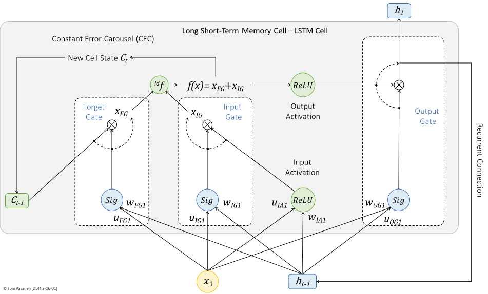
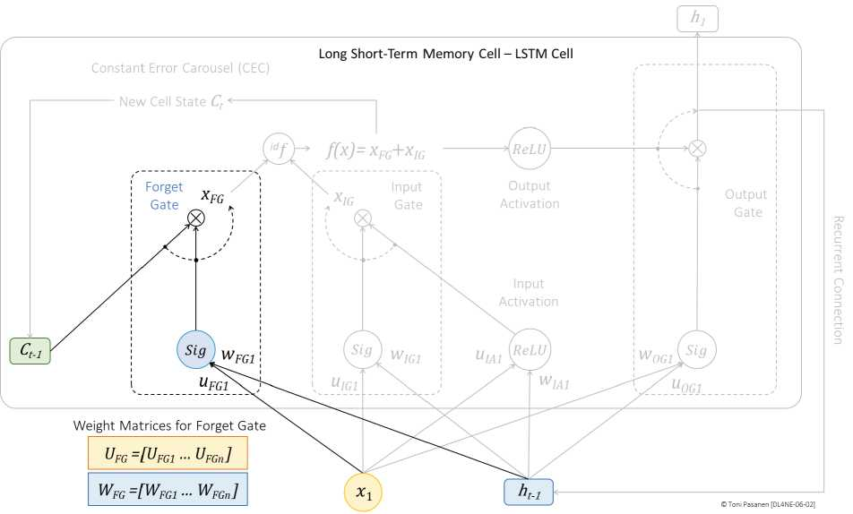

LSTM 新增一条细胞状态 C_t，像传送带贯穿所有时间步，信息可直通、少衰减。三个门（都是 Sigmoid 0-1 开关 + 点乘）控制“丢什么、记什么、说什么”。
遗忘门 f：决定丢掉多少旧记忆（0全忘，1全留）；输入门 i：决定存入多少新内容（配合 tanh 候选）；输出门 o：决定拿多少记忆去输出。公式：C_t = f·C_{t-1} + i·候选，h_t = o·tanh(C_t)。书 p132-136 逐门演示。
C 的更新是加法（不是反复乘 W），梯度可沿传送带直通，远端误差不被连乘抹掉。代价是参数约为 RNN 4 倍，训练更重、对 Fabric 带宽更渴求。网工记住：精度用算力/带宽换来。


默画三门位置并标注 f/i/o 各控哪条线。